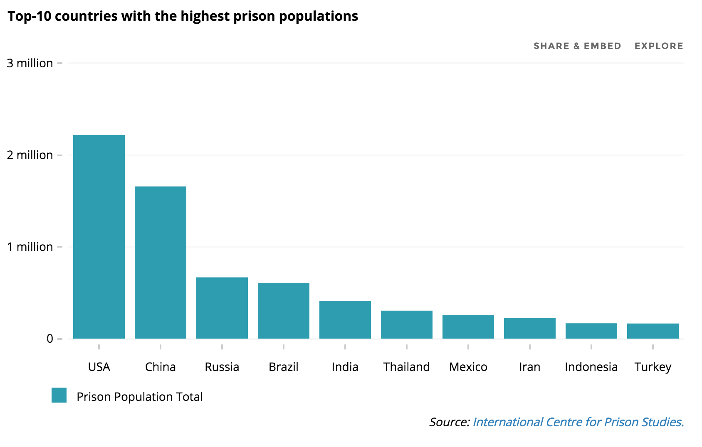
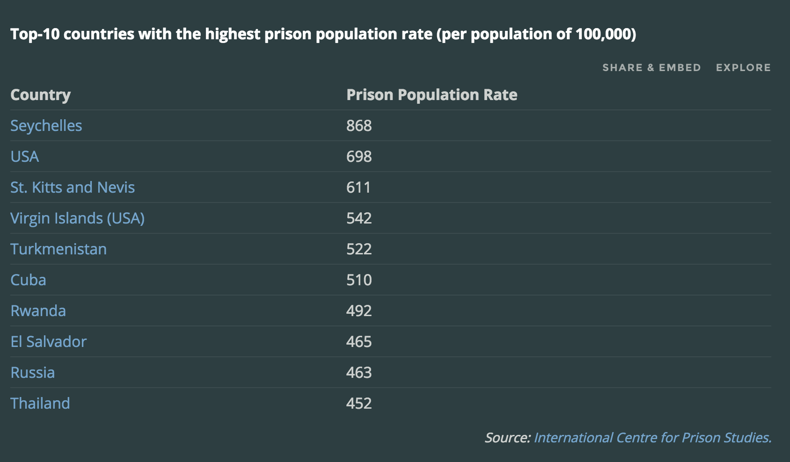

Supermax Planet
Out of the world’s seven billion inhabitants, an estimated 10.2 million of them are imprisoned worldwide — from the infamous prisons of upstate New York to the secret penitentiaries of China. According to the International Centre for Prison Studies (ICPS), there are more than 2.5 million people in pre-trial detention or other forms of imprisonment. Amnesty International states that, in general, the majority of the world’s prisoners are “held without due process and….convicted in unfair trials.” More recently, for example, Moses Akatugba, a Nigerian who was imprisoned at the age of 16 for a crime he did not commit, was finally released after 10 years in prison. Yet, the scars of his experience in prison remains:
“The pain I went through in the hands of the officers was unimaginable. In my whole life, I have never been subjected to such inhuman treatment.”
Moses Akatugba is one of millions of prisoners around the world. A report by the International Centre for Prison Studies reveals that nearly half of the world’s prisoners are in the United States (2.24 million), China (1.65 million), and Russia (667,546).
Total Incarceration Figures
In the United States, in addition to the 2.24 million people incarcerated in the country, over 5 million people are in federal or state supervision due to probation or parole. Although the U.S. makes up only 5% of the world’s population, it is “responsible for nearly 22% of the world’s prison population.” According to ICPS, in the face of these shocking figures, it is more concerning that “the world prison population continues to rise, despite the fact that imprisonment is a highly expensive option for governments, as well as being inappropriate and ineffective for the majority of prisoners.”

Incarceration Population Rates
Total incarceration figures do not necessarily paint an accurate picture of the prisoner population in each country. As such, the ICPS also compiled data regarding incarceration rates, per population of 100,000. As demonstrated, Seychelles has the highest prison population rate (868); however, Seychelles’ population is an estimated 89,1723 — meaning that there are less than 1,000 prisoners in the entire island. On the other hand, the United States, which has an estimated population of 318.9 million, comes second in terms of the prison population rate (698). The United States is considered to have one of the highest prison population rates in the world, followed by St. Kitts and Nevis (611) and the Virgin Islands (542) — both of which have a small population.

Pre-trial and Remand Imprisonment
The study by ICPS not only examined the world’s incarceration rate, but also researched the the case of pre-trial or remand imprisonment.
Researchers ultimately found that there are many developing countries with a high proportion of the prison population in pre-trial or remand imprisonment, including the Comoros (92%), Libya (87%), Liberia and Bolivia (83%), and the Democratic Republic of Congo (82%).
The Female Prisoner Population
Within the world’s incarcerated and remanded populations, thousands of women remain. In terms of the female prison population, the ICPS reveals that over 625,000 women and girls are held in penal institutions worldwide. In fact, nearly one third of female prisoners are imprisoned in the United States (201,200), followed by China (84,600), Russia (59,200), Brazil (35,586), and Thailand (29,175). There are only few other countries that have a female prison population over 7,000 — including India, Vietnam, Mexico, Ukraine, and the Philippines.
Statistics show that the female prison population is increasing in most regions of the world. In comparison to the ICPS’ findings in the World Prison Population List (2006), the recent 2013 report shows a 16% increase in the world’s female prison population. The United States, in particular, witnessed the highest increase (23%) in the female prison population rate. In comparison, European countries experienced the lowest (6%) female prison population growth.
In total, the highest rates of female prisoners are found in Monaco (24.1%), Lichtenstein (22.2%), and Hong Kong (19.4%).
However, beyond country-by-country figures, the ICPS shows through continental figures that the median level of female imprisonment is highest in Asia (5.95%), followed by the Americas (5.15%), Europe (4.9%), and Africa (3.1%).